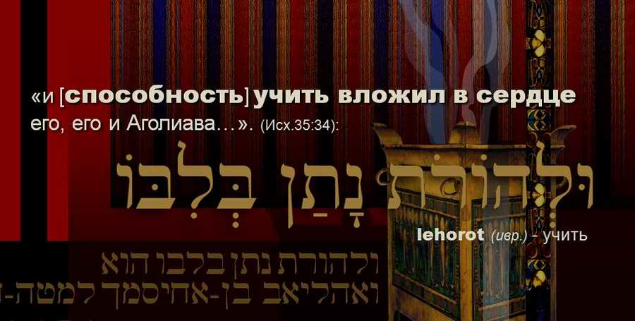

The School of Bezalel: The Parent
This post looks at the word "to teach" in Exod. 35:34: "and He hath put in his heart [the ability] to teach…".
"And I have filled him with the Spirit of God, in wisdom, and in understanding, and in knowledge, and in all manner of workmanship… and in the hearts of all that are wise hearted I have put wisdom, that they may make all that I have commanded thee."
וָאֲמַלֵּא אֹתוֹ רוּחַ אֱלֹהִים בְּחָכְמָה וּבִתְבוּנָה וּבְדַעַת וּבְכָל־מְלָאכָה׃ …
וּבְלֵב כָּל־חֲכַם־לֵב נָתַתִּי חָכְמָה וְעָשׂוּ אֵת כָּל־אֲשֶׁר צִוִּיתִךָ׃
Exod. 31:3–6
VA-AMALE OTO RUAH ELOHIM BE-HOKHMA U-VINA U-VE-DAAT U-VE-KOL MELAKHA… U-VE-KOL HAKHAM-LEV NATATI HOKHMA VE-ASU ET KOL-ASHER TSIVITIKHA
God not only fills Bezalel with the Spirit and gives him wisdom, knowledge, understanding and the ability to serve the Most High in every craft and to make the sanctuary (this is spoken of at the beginning of chapter 31). There is one more very important thing that God specially announces before all Israel: He gives Bezalel the ability to teach. He literally puts this need into his heart.

VE-LEHOROT NATAN BE-LIBO, HU VE-OHOLIAV BEN-AHISAMAKH LE-MATE DAN.
Having begun in the previous post to talk about this command of the Most High to Bezalel (Synodal: Veseleil), I want to continue reflecting on the School of Bezalel.
I would like to explore this word "to teach" in Hebrew, LEHOROT, and look at it closely.
For this I need other words of the same root that we meet in the Torah. To find such words I usually use the computer version of Strong's concordance with numbers.
Close acquaintance with the "family", the words of the same root as "to teach", will help us to enter into the depth of what the Creator entrusted to Bezalel and what exactly He put into his heart: the essence of this calling of the artist.
Words of the same root as "to teach": "parent" (ORE), "archer" (YORE), "teacher" (MORE), "teaching" (TORAH). The word "Torah" is often used also in the sense of Law or the Pentateuch, but its literal translation is teaching. King David often uses this word in the Psalms. The prophet Isaiah too (Isa. 2:3) says: "…and He will teach us of His ways, and we will walk in His paths: for out of Zion shall go forth the TORAH, and the word of the LORD from Jerusalem."
What God puts into Bezalel's heart becomes part of him. It becomes as much his need as the need to breathe.
Let us look once more at this phrase in Hebrew and compare it with the translation:
Exod. 35:34 "…And He hath put in his heart [the ability] to teach…"
וּלְהוֹרֹת נָתַן בְּלִבּוֹ
[to teach, in Hebrew LEHOROT]
Note that in the Russian translation the word "ability" is in brackets. Indeed, the Hebrew original has no word "ability" in the text. So it is more correct to read: "and He put teaching into his heart". It does not sound very elegant, but in my view there is a deep meaning in it.
When a person has a certain ability, he can neglect it or use it, develop and multiply it, or bury it, as in the well-known parable of the talents. In other words, our ability can be passive, or active if we decide to use it. But what God puts into Bezalel's heart becomes part of him. It is no longer something he can decide to use or not. It becomes as much his need as the need to breathe.
If God puts such a gift into an artist, it means that first this person must be taught by God. Of this we can be sure: if God charges us to teach, by His Spirit He will make us able to do His will.
ORE: parent
So the first of the words related to "to teach" is ORE, parent: the one who conceives and carries in the womb, brings up, teaches everything needed in life; the one who punishes and pardons, who loves and protects, who provides, cares, helps to make sense of life, teaches to make choices, to understand meaning and purpose…
In Scripture God often appears in the role of a Parent. He speaks of Himself as a Father, or as a mother protecting her child.
In Israel, at every going in and coming out, one constantly sees signs of His parenthood. I mean the mezuzot fixed to the doorposts. A mezuzah is a special case holding a parchment with a passage of Scripture. Very often the mezuzah is decorated with the letter SHIN, the first letter of the name of the Most High, SHADDAI (EL SHADDAI). Some commentators see in it an abbreviation: SHOMER DLATOT YISRAEL (Guardian of the doors of Israel), ShaDaY.
One explanation of the name SHADDAI is "provider", or "more than enough".
שַׁדַּי (07706) SHADDAI: the Almighty, Ruler of all.
Whenever a promise of fruitfulness or birth appears in the text, the name El Shaddai appears. So this name of God could also be interpreted as God who gives birth, gives life, God who nourishes, which shows the motherhood of God.
Here is one vivid example. In the blessing of the twelve tribes, Yaakov says to Yosef, "a fruitful bough":
22 "Yosef is a fruitful bough, even a fruitful bough by a well… 25 Even by the God of thy father, who shall help thee; and by the Almighty (שַׁדַּי), who shall bless thee with blessings of heaven above, blessings of the deep that lieth under, blessings of the breasts, and of the womb…"
Gen. 49:22–25
22 בֵּן פֹּרָת יוֹסֵף בֵּן פֹּרָת עֲלֵי־עָיִן
25 מֵאֵל אָבִיךָ וְיַעְזְרֶךָּ וְאֵת שַׁדַּי וִיבָרְכֶךָּ בִּרְכֹת שָׁמַיִם מֵעָל בִּרְכֹת תְּהוֹם רֹבֶצֶת תָּחַת בִּרְכֹת שָׁדַיִם וָרָחַם׃
BEN PORAT YOSEF, BEN PORAT ALEI-AYIN ME-EL AVIKHA VE-YA'ZREKHA VE-ET SHADDAI VIVAREKHEKHA BIRKHOT SHAMAYIM ME-AL BIRKHOT TEHOM ROVETSET TAHAT BIRKHOT SHADAYIM VA-RAHAM
Yaakov's blessing
A Tatar saying goes: "What a child did not receive with his mother's milk, he will never receive with cow's milk." Of course, I mean here the word of God, His Torah, which tradition links with milk. To this day there is a Jewish tradition of eating mainly dairy foods at the feast of SHAVUOT (Pentecost). This tradition is connected with the giving of the Torah by the Most High at Mount Sinai.
It is no accident that the apostle Peter says (1 Pet. 2:2–3): "As newborn babes, desire the sincere MILK OF THE WORD, that ye may grow thereby: if so be ye have tasted that the Lord is gracious." God appears here, as it were, as a nursing mother.
And just as a mother's milk changes its composition from week to week and month to month (depending on the infant's need for ever new "building materials" as all the organs and functions of his body are formed), so the Torah has the ability to "change". Reading one and the same text, we can draw from it endlessly, depending on the circumstances of our life, our spiritual age and our needs. The midrash about the manna also hints at this property of the Torah, the word of the LORD: when our fathers ate manna in the wilderness, its taste became like whatever they had need of. It is no accident that the great four-letter name of the Most High (yud-hei-vav-hei) can be interpreted as "I am the One you need" (EHYEH ASHER EHYEH). That is, if you need healing, I am the God who heals (Adonai Rofeh); if you need protection, the Keeper of Israel (Shomer Yisrael) or the Shield of Avraham (Magen Avraham).
Such is the first word, "parent", of the same root as LEHOROT (to teach).
How do you think all this was refracted in the gift of teaching that God put into the artist's heart?
Author: Ephraim Kalish / Torah-Art
In the next post we will look at the word YORE (archer), of the same root as LEHOROT (to teach).
See also on this subject: The School of Bezalel. The Calling to Teach